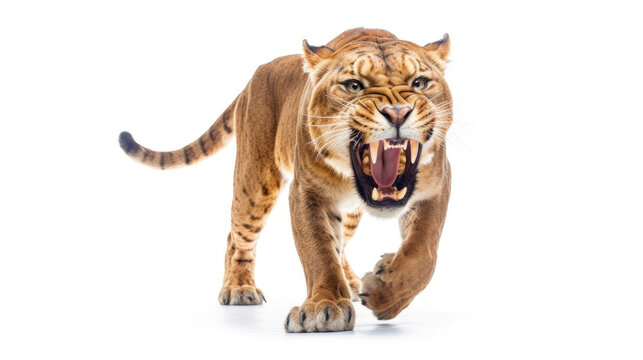
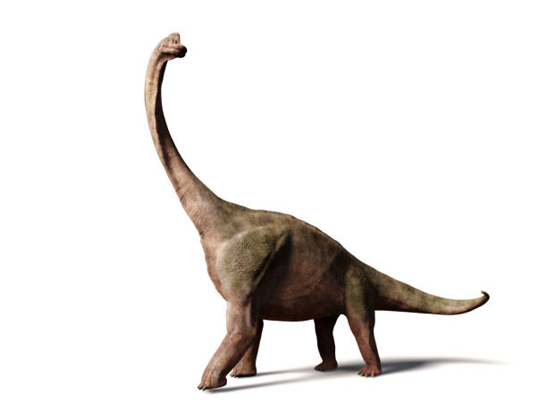
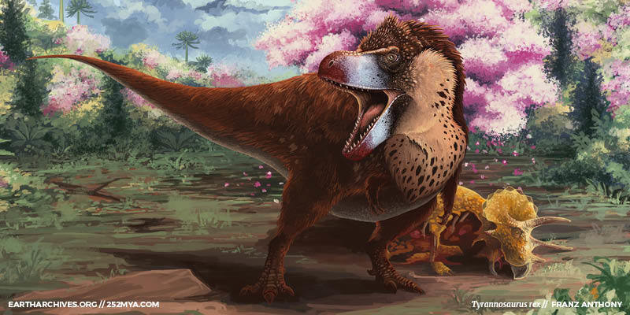

Why Learn About Extinct Animals?
Extinct animals allow us to see bits of the Earth's past ecosystems, wildlife, and climates. Scientists use these pieces of Earth's past to try and paint a picture of what the past looked like. These extinct animals can help try and figure out problems on Earth today. By learning from past extinctions, scientists can better protect endangered species and their habitats.

By understanding how these extinct organisms lived with other animals and how they went extinct, scientists can further understand the Earth we live on. Every organism plays a unique role in their ecosystem, which is reflected by how they fit into that ecosystem. Whether the extinct animal was a grass grazer, or an apex predator, they both contribute to the ecosystem they are a part of.

Another source of interest for these extinct animals is the curiosity and wonder surrounding them. With large franchises like Jurrasic Park and Ice Age, people of all ages have interest in these extinct animals. Apart from comparing the bones and fossils of different organisms, a large amount of determining the color and look of an organism is by speculation. We have the bones of these animals, but can we properly predict their exact form? Open ended questions about their true form create even more interest and curiousity about these organisms. For example, the famous dinosaur, the T-Rex, might have been covered in feathers similar to a chicken. This idea is completely different than the scaly lizard creature most of us think of. These ideas are not 100% confirmed, and there is not a T-Rex roaming the Earth we can check this data with. This is an example of how extinct animal research can be largely speculative.
This website's purpose is to bring attention to the many animals that have gone extinct, and to the endangered animals that are small in number at the moment. There are many animal species on Earth right now that are being faced with habitat loss and climate change. These world altering events hurt several ecosystems across water and land. Look through the several pages to learn more about the animals of Earth's past and present.